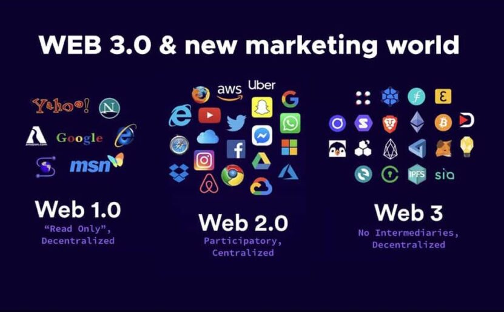

จุดเริ่มต้นของเว็บ3.0
โดย Web 3.0 นี้เป็นแนวคิดที่เริ่มมาจากทิม เบอร์เนอร์ส-ลี คนเดียวกันกับที่ริเริ่ม Web 1.0 นี่แหละ เขาได้มองว่าเว็บที่จะเป็น Web 3.0 ได้นั้น จะเกิดจากพัฒนาการการเชื่อมโยงระหว่างข้อมูลบนเว็บไซต์ ให้เป็นฐานข้อมูลขนาดใหญ่เชื่อมโยงระหว่างกันแบบเครือข่ายทั่วทั้งโลก รวมถึงนำเอาเทคโนโลยีใหม่ ๆ อย่างเช่น AI เข้ามาช่วยในการทำให้เว็บไซต์นั้นทำงานได้อย่างดีมากขึ้น หรือการถ่ายโอนข้อมูลระหว่างคน และอุปกรณ์ได้แบบอัตโนมัติ ทั้งหมดนี้เรียกว่าเป็น Semantic Web หรือ ‘เว็บเชิงความหมาย’และเนื่องจากว่านี่เป็นเพียงการคาดการณ์เว็บไซต์ที่จะเกิดขึ้นในอนาคต ทิม เบอร์เนอร์ส-ลี จึงได้อุทิศตนเพื่อการพัฒนามาตรฐานสากลของเว็บไซต์โดยเฉพาะ และได้ก่อตั้ง องค์กรเว็บไซต์สากล (World Wide Web Consortium หรือ W3C) ขึ้นมา และได้สรุปลักษณะของ Web 3.0 ที่อาจจะเกิดขึ้น และเริ่มเป็นจริงแล้วในตอนนี้ออกมาได้ดังนี้
- ไร้ตัวกลาง (Decentralized) หมายถึงมีการกระจายอำนาจผู้ใช้งาน ไม่ต้องติดต่อสื่อสารหากันผ่านตัวกลาง หรือเซิร์ฟเวอร์ต่าง ๆ (เช่น สามารถติดต่อหากันได้โดยไม่ต้องใช้เซิร์ฟเวอร์ของเฟซบุ๊กหรือกูเกิลเข้ามาเกี่ยวข้อง)
- มีโค้ดที่ออกแบบร่วมกันได้ (Bottom-up Design) หมายถึงการพัฒนาโค้ดที่ให้ผู้ใช้มีส่วนร่วมในการเข้ามาพัฒนาโค้ดของเว็บไซต์ หรือแอปต่าง ๆ จนสามารถใช้งานได้ แทนที่จะให้คนกลุ่มเดียวเข้ามาออกแบบโค้ดเท่านั้น ให้ลองนึกถึงเว็บไซต์ร่วมออกแบบโค้ดโปรแกรมอย่าง กิตฮับ (Github) ที่โค้ดโปรแกรมเป็นแบบโอเพ่นซอร์ส สามารถเข้ามาร่วมพัฒนาโค้ด แก้บั๊กต่าง ๆ ร่วมกัน เป็นต้น
- มีฉันทามติ (Consensus) สามารถตรวจสอบความถูกต้องกันเองระหว่างผู้ใช้ได้ มีความโปร่งใส เพื่อสร้างความเห็นพ้องต้องกันได้
ต่อมา เกวิน เจมส์ วูด (Gavin James Wood) ผู้ร่วมก่อตั้ง Ethereum คริปโทเคอร์เรนซีอันดับต้น ๆ ของโลก ได้มีแนวคิดที่จะต่อยอดเรื่อง Web 3.0 จึงได้ก่อตั้งมูลนิธิ Web3 (Web3 Foundation) ขึ้นเพื่อสร้างความตระหนักรู้ ให้คนรู้จัก Web 3.0 และผลักดันให้มาตรฐานเว็บไซต์ใหม่นี้เป็นที่รู้จัก และมีผู้ใช้งานให้มากยิ่งขึ้นเกวินได้กล่าวสรุปแนวคิด Web 3.0 ออกมาใหม่ โดยหมายถึงรูปแบบอินเทอร์เน็ตในอนาคตที่จะไม่มีเซิร์ฟเวอร์ มีการกระจายอำนาจ เป็นโลกอินเทอร์เน็ตที่ผู้ใช้ทุกคนสามารถควบคุมข้อมูล ตัวตน รวมถึงกำหนดทิศทางของชีวิตตัวเองได้อย่างแท้จริง

ที่มา